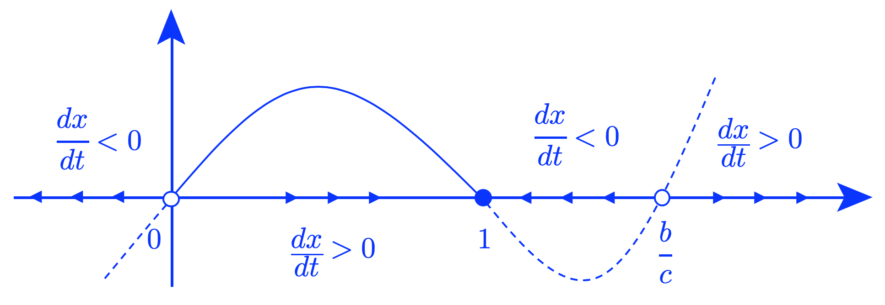
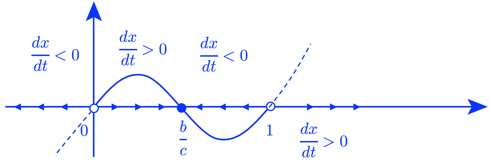
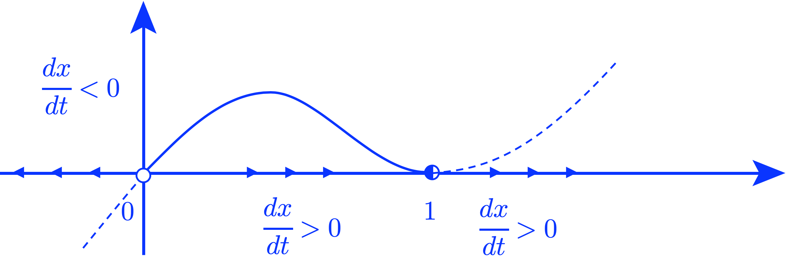
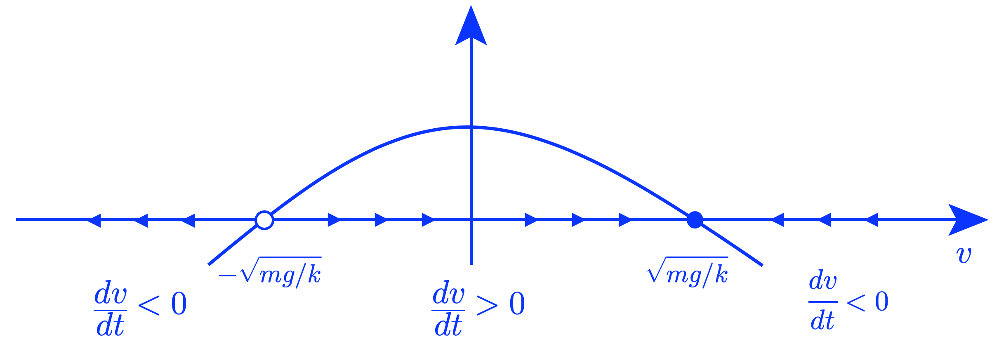
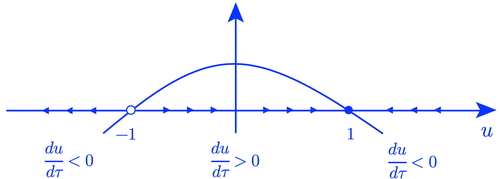

Discussion 2 (Spring 2020)2020-03-08
Problem 1 (A Hawk-Dove game)In class, we discussed the ‘‘snowdrift“ model as an example for interaction of organisms. In this problem, we will use a ‘‘Hawk-Dove” model instead. In the Hawk-Dove game, we assume that when two organisms interact, they compete for some resource (e.g., territory or food). Only one organism can win the competition, and the winner receives benefit \(b\). However, if the organisms fight, one could be injured, incurring a cost. Organisms can adopt two different strategies when they interact. Hawks always fight for the resource, while Doves always back down from a fight. When two doves meet, both back down, and they share the resource equally (i.e., each gets benefit \(b/2\)). When a hawk meets a dove, the dove surrenders the resource to the hawk. The hawk receives benefit \(b\), while the dove gets nothing. When two hawks meet, they fight, and the victor receives the benefit \(b\). The loser is injured in the fight and incurs a cost \(c\). (a) Construct the payoff matrix for the Hawk-Dove game. Your matrix should represent the average payoff obtained for the ‘‘player" in each of the interactions outlined above. It should have the following form:
Solution.
(b) Assuming that the birth rates of hawks and doves are proportional to payoff and that the death rate is chosen so that the total population is constant (i.e., the assumptions we made in class), derive the following differential equation for the fraction of the population that are hawks (\(x\)): \[ \begin{equation} \dfrac{dx}{dt} = knx(1-x)\left(\dfrac{b}{2} - \dfrac{cx}{2}\right), \end{equation} \label{eq:A} \] with \(y = 1-x\) being the fraction that are doves. Solution. Suppose that \[ \begin{aligned} N &:= \text{total population of the organism} \\ x &:= \text{fractions of population of hawks in total population} \\ y &:= \text{fractions of population of doves in total population} \\ n &:= \text{the number of organism that each organism interacts with} \end{aligned} \] Then, the total payoff is: \[ \begin{align*} \left( \begin{array}{c} \text{Hawk Payoff per organism}\\[4pt] \text{Dove Payoff per organism} \end{array} \right) &= \left( \begin{array}{cc} \dfrac{b-c}{2} & b \\ 0 & \dfrac{b}{2} \end{array} \right) \left( \begin{array}{c} nx\\ ny \end{array} \right) = \left( \begin{array}{c} \dfrac{1}{2} nx (b-c) + nyb\\ \dfrac{1}{2} nyb \end{array} \right) \end{align*} \] Suppose that \[ \begin{aligned} k &:= \text{the ratio of birth to the payoff} \\ m &:= \text{the ratio of death to the total populatoin} \end{aligned} \] Then, the number of offspring is \[ \begin{aligned} \text{Hawk Offspring} &= Nx \cdot k \cdot \left(\dfrac{1}{2} nx (b-c) + nyb\right) \\ \text{Hawk Offspring} &= Ny \cdot k \cdot \dfrac{1}{2} nyb \end{aligned} \] Then, the rate of change of each organism (birth number - death number) is, \[ \begin{aligned} & \begin{array}{l} \dfrac{d}{dt}(Nx) = Nx \cdot k \cdot \left(\dfrac{1}{2} nx (b-c) + nyb\right)- mNx\\ \dfrac{d}{dt}(Ny) = Ny \cdot k \cdot \dfrac{1}{2} nyb - mNy \end{array} \\[8pt] \implies \quad & \begin{array}{l} \dfrac{dx}{dt} = x \cdot k \cdot \left(\dfrac{1}{2} nx (b-c) + nyb\right)- mx\\ \dfrac{dy}{dt} = y \cdot k \cdot \dfrac{1}{2} nyb - my \end{array} \\[8pt] \implies \quad & \begin{array}{l} \dfrac{dx}{dt} = \dfrac{1}{2} nbk (x^2 + 2xy) - \dfrac{1}{2} nckx^2 - mx \\ \dfrac{dy}{dt} = \dfrac{1}{2} nbky^2 - my \end{array} \end{aligned} \] Consider that \(x + y = 1\) and \(\dfrac{dx}{dt} + \dfrac{dy}{dt} = 0\), we have, \[ \begin{aligned} 0 = \dfrac{dx}{dt} + \dfrac{dy}{dt} &= \dfrac{1}{2} nbk (x^2 + 2xy) - \dfrac{1}{2} nckx^2 - mx + \dfrac{1}{2} nbky^2 - my \\ m(x+y) &= \dfrac{1}{2} nbk (x^2 + 2xy + y^2) - \dfrac{1}{2} nckx^2\\ m &= \dfrac{1}{2} nbk (x+y)^2 - \dfrac{1}{2} nckx^2 \\ m &= \dfrac{1}{2} nbk - \dfrac{1}{2} nckx^2 \end{aligned} \] Then, plugging back in \(\dfrac{dx}{dt}\), we have, \[ \begin{aligned} \dfrac{dx}{dt} &= \dfrac{1}{2} nbk (x^2 + 2xy) - \dfrac{1}{2} nckx^2 - mx \\ &= \dfrac{1}{2} nbk (x^2 + 2xy) - \dfrac{1}{2} nckx^2 - x \left(\dfrac{1}{2} nbk - \dfrac{1}{2} nckx^2 \right) \\ &= \dfrac{1}{2} nbk (x^2 + 2xy) - \dfrac{1}{2} nckx^2 - \dfrac{1}{2} nbkx + \dfrac{1}{2} nckx^3\\ &= \dfrac{1}{2} nbk (x^2 + 2xy - x) - \dfrac{1}{2} nck(x^2 - x^3) \\ &= \dfrac{1}{2} nbk x (x + y + y - 1) - \dfrac{1}{2} nckx^2 (1 - x) \\ &= \dfrac{1}{2} nbk x ( 1-x) - \dfrac{1}{2} nckx^2 (1 - x) \\ \implies \ \dfrac{dx}{dt} &= knx(1-x)\left(\dfrac{b}{2} - \dfrac{cx}{2}\right) \end{aligned} \] (c) Solve the following 4 parts:
(i) Show that if \(b>c\), then the only fixed points of \(\eqref{eq:A}\) within \(0 \leq x \leq 1\) are \(x=0\) and \(x=1\). Which fixed point is stable and which is unstable?
Solution.
Let \(\dfrac{dx}{dt} = 0\), then \[ \begin{align*} \dfrac{dx}{dt} &= knx(1-x)\left(\dfrac{b}{2} - \dfrac{cx}{2}\right) \quad \implies \quad x = 0 \ , \ x = 1 \ \text{and} \ x = \dfrac{b}{c} \end{align*} \] Since \(0 \leqslant x \leqslant 1\), when \(b > c\), we have \(x = \dfrac{b}{c} > 1\). Then, the only fixed points are \(x = 0\) and \(x = 1\). The vector field is as below,

Then, the stabilities are \[ x= 0 \ (\text{unstable}) \ , \ x = 1 \ ( \text{stable}) \] (ii) Show that if \(b<c\), then there are three fixed points in this interval, and evaluate their stability.
Solution.
When \(0 < b < c\), we have \(x = \dfrac{b}{c} \in (0,1)\). Then, there are three fixed points, \(x = 0\), \(x = 1\), and \(x = \dfrac{b}{c} \). The vector field is as below,

Then, the stabilities are \[ x= 0 \ (\text{unstable}) \ , \ x = \dfrac{b}{c} \ ( \text{stable}) \ , \ x = 1 \ ( \text{unstable}) \] (iii) Suppose that \(b = c\); then \[ \dfrac{dx}{dt} = \dfrac{knb}{2}x(1-x)^2. \] Again, we only have two fixed points. Evaluate their stability.
Solution.
When \(0 < b < c\), we have \(x = \dfrac{b}{c} \in (0,1)\). Then, there are three fixed points, \(x = 0\), \(x = 1\), and \(x = \dfrac{b}{c} \). The vector field is as below,

Then, the stabilities are \[ x= 0 \ (\text{unstable}) \ , \ x = \dfrac{b}{c} \ ( \text{stable}) \ , \ x = 1 \ ( \text{unstable}) \] (iv) Give an interpretation of what happens to the population of hawks and doves long-term in each of the scenarios in (i) - (iii).
Solution.
Problem 2 (Nondimensionalization)The differential equation for the velocity \(v\) of a falling object with mass \(m\) is \[ \begin{equation} \dfrac{dv}{dt} = g - \dfrac{k}{m}v^2. \end{equation}\label{eq:B} \] (a) Specify the dimensions of all variables and parameters. Solution.
(b) Nondimensionalize the equation. Solution. Let \(u\) and \(\tau\) be two dimensionless variable such that \[ v = \sqrt{\dfrac{mg}{k}} u \ , \ \tau = \sqrt{\dfrac{gk}{m}} t \] Then \[ \begin{align*} \dfrac{dv}{dt} &= g - \dfrac{k}{m}v^2 \\ \dfrac{d\tau}{dt} \dfrac{dv}{d\tau} &= g - \dfrac{k}{m} \left( \sqrt{\dfrac{mg}{k}} u \right)^2 \\ \sqrt{\dfrac{mg}{k}} \sqrt{\dfrac{gk}{m}} \dfrac{du}{d\tau} &= g - \dfrac{k}{m} \dfrac{mg}{k} u^2 \\ g \dfrac{du}{d\tau} &= g - g u^2 \\ \dfrac{du}{d\tau} &= 1 - u^2 \end{align*} \] (c) Find the nondimensional terminal velocity of the object, and show that this agrees with the terminal velocity calculated from the original model \(\eqref{eq:B}\). Solution. For \(\dfrac{dv}{dt} = g - \dfrac{k}{m}v^2\) and \(v(0) = v_0\), we have \[ \begin{align*} g - \dfrac{k}{m}v^2 = 0 \ \implies \ \left(\sqrt{g} - \sqrt{\dfrac{k}{m}} v \right)\left(\sqrt{g} + \sqrt{\dfrac{k}{m}} v \right) = 0 \ \implies \ v = \sqrt{\dfrac{mg}{k}} \ \text{or} \ v = -\sqrt{\dfrac{mg}{k}} \end{align*} \] The vector field graph is

Then, \(v=-\sqrt{\dfrac{mg}{k}}\) is unstable, and \(v=\sqrt{\dfrac{mg}{k}}\) is stable. That means
For \(\dfrac{du}{d\tau} = 1 - u^2\) and \(u(0) = u_0\), we have \[ \begin{align*} 1 - u^2 = 0 \ \implies \ (1-u)(1+u) = 0 \ \implies \ u = 1 \ \text{or} \ u = -1 \end{align*} \] The vector field graph is

Then, \(u=-1\) is unstable, and \(u=1\) is stable. Since \(v = \sqrt{\dfrac{mg}{k}} u\), that means
This result of terminal velocity matchs what we get from the original equation. |
|||||||||||||||||||||||||||||||||||||||||||